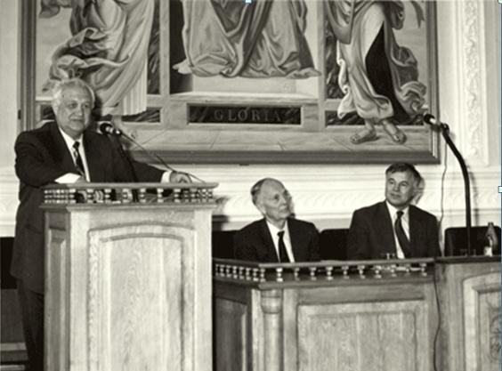

Створення ФТІ
В сучасних умовах ринкової економiки, прискореного розвитку наукоємних технологiй зростає попит на фахiвцiв з широкою загальнонауковою освiтою, що поєднується з вузькою спецiалiзацiєю, здатних швидко змiнювати рiд та характер професiйної дiяльностi, переоцiнювати накопичений досвiд, аналiзувати свої можливостi, набувати нових знань з використанням сучасних iнформацiйних технологiй, працювати над мiждисциплiнарними проектами, використовувати свої знання в рiзноманiтних галузях науки i технiки. Такi фахiвцi вкрай потрiбнi установам Нацiональної академiї наук України, Мiнiстерства освiти i науки України, державним структурам iнших мiнiстерств та вiдомств, а також структурам недержавної форми власностi, якi впроваджують наукоємнi технологiї.
Пiдготовка фахiвцiв такого профiлю в колишньому СРСР проводилась за фiзтехiвською системою, започаткованою в Ecol Politecnik (Францiя), Калiфорнiйському технологiчному університеті. Фiзтехiвська система освiти в колишньому СРСР впроваджена лауреатом Нобелевської премiї академiком Капiцею П.Л. в Московському фiзико-технiчному iнститутi (МФТI). ЇЇ принципи знайшли багато прихильникiв i були запозиченi та реалiзованi низкою iнших вищих навчальних закладiв. Основнi принципи фiзтехiвської системи освiти: глибока пiдготовка з фундаментальних наук: одночасно високий рiвень математичної та фiзичної освiти; пiдготовка з iноземних мов в пiдвищеному обсязi; поєднання широкої загальнонаукової освiти в кращих унiверситетських традицiях з вузькою спецiалiзацiєю та отриманням практичних навичок роботи в базових iнститутах. iз здобуттям Україною незалежностi учбовi заклади, якi реалiзовували фiзтехiвську систему освiти, на жаль, залишилися за межами України.
Першi структурнi кроки по впровадженню фiзтехiвської системи освiти в Українi були здiйснені Мiнiстерством освiти i науки України та Нацiональною академiєю наук України.  Так, згiдно постановi Президiї НАН України №179 вiд 06.07.1994р. п.6 “Про завдання Нацiональної академiї наук України у вирiшеннi першочергових проблем економiчного розвитку України” та спiльному наказу Мiнiстерства освiти та Нацiональної академiї наук України за № 25/35 вiд 14 лютого 1995 року, з вересня 1995 року було вiдкрито факультет подвiйного пiдпорядкування – фiзико-технiчний факультет Нацiонального технiчного унiверситету України “Київський полiтехнiчний iнститут” (НТУУ “КПI”). Цiй подiї передувала велика пiдготовча робота, здiйснювався пошук рiзних форм такої структури, що могла б поєднати в собi досвiд провiдних вчених з Нацiональної академiї наук України, якi займаються актуальними дослiдженнями за найвищими сучасними стандартами, i педагогiчного досвiду квалiфiкованих викладачiв, який приходить пiсля багатьох рокiв роботи з студентами.
Так, згiдно постановi Президiї НАН України №179 вiд 06.07.1994р. п.6 “Про завдання Нацiональної академiї наук України у вирiшеннi першочергових проблем економiчного розвитку України” та спiльному наказу Мiнiстерства освiти та Нацiональної академiї наук України за № 25/35 вiд 14 лютого 1995 року, з вересня 1995 року було вiдкрито факультет подвiйного пiдпорядкування – фiзико-технiчний факультет Нацiонального технiчного унiверситету України “Київський полiтехнiчний iнститут” (НТУУ “КПI”). Цiй подiї передувала велика пiдготовча робота, здiйснювався пошук рiзних форм такої структури, що могла б поєднати в собi досвiд провiдних вчених з Нацiональної академiї наук України, якi займаються актуальними дослiдженнями за найвищими сучасними стандартами, i педагогiчного досвiду квалiфiкованих викладачiв, який приходить пiсля багатьох рокiв роботи з студентами.
Наші випускники
- АНЧІШКІН ЄГОР
- Співзасновник ІТ-компанії Viewdle, одного із найвідоміших за кордоном українських стартапів з розпізнавання облич у фото- і відеоматеріалах,чий продукт купив Google. 2012 року ця оборудка стала найбільш обговорюваною в IТ-співтоваристві. За даними Bloomberg, сума оборудки становила 45 мільйонів доларів.
- ВІКТОР ЖОРА
- Директор та співвласник компанії «Інфосейф ІТ», член Ради ГО «Українська група інформаційної безпеки». У сфері ІТ працює з 2000 року. Спеціаліст з інформаційної безпеки, автор монографії і близько 40 наукових публікацій щодо захисту інформації. Брав участь в створенні комплексних систем захисту інформації загальнодержавного значення. Нагороджений Почесною грамотою Центральної виборчої комісії.
- СОЛОГУБ РОМАН
- Випускник 2007 року. Директор та співзасновник компанії ISSP та київської кіберакадемії. Приймає активну участь у розвитку напрямку кібербезпеки в Україні.Активно співпрацює з кафедрою та інститутом в напрямку розвитку освітніх програм та підготовки бакалаврів і магістрів. Має значну кількість публікацій та виступів за темами захисту інформації як в Україні, так і за її межами.
- МИКОЛА ПАЛІЄНКО
- Співвласник компанії EVO Group, гіганта е-комерції. Об’єднана компанія буде розвивати маркет плейси, що дозволить малим і середнім українським підприємцям продавати товари через сайти EVO Group.
- МУРАШКО МИКИТА
- Технічний директор EVO,відповідає за координацію роботи розробників, архітекторів і системних адміністраторів.
- СДОБНІКОВ ВІКТОР
- Співзасновник та технічний директор компанії Apostera GmbH (www.apostera.com). Комп’ютерний зір, розпызнавання образів. З 2018 року викладач Фізтеху.
- СТЕЦЮК КАТЕРИНА
- Очолює департамент штучного інтелекту в ІТ-компаніїї ARVI.
- ІЛІБМАН ВОЛОДИМИР
- Провідний фахівець компанії CISCO Systems.